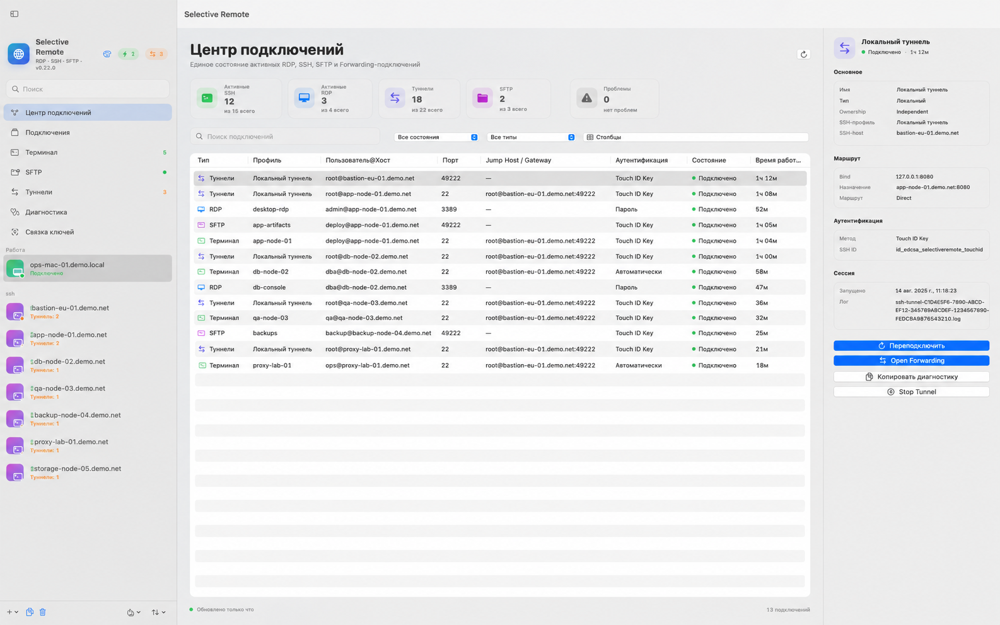

RDP, SSH and SFTP for macOS — in one workspace.
Selective Remote combines multi-monitor Retina RDP, an SSH Terminal Workspace, dual-pane SFTP including Server → Server transfers, and SSH port forwarding.
Download latest DMGView source
One Mac app for remote infrastructure
Multi-monitor RDP
True macOS fullscreen, Retina rendering, external displays, manual monitor layout, RDP Gateway and Smart Reconnect.
SSH Terminal Workspace
Tabs, split/grid panes, different servers per pane, history, suggestions, Server Commands and Smart Links.
Dual-pane SFTP
Mac ↔ Server and Server ↔ Server, multi-select, drag and drop, permissions, progress, speed, ETA, pause/resume/cancel/retry.
Port forwarding
Local, Remote and Dynamic/SOCKS5 forwarding with saved profiles, temporary targets, Jump Host and runtime diagnostics.
Guides
Multi-monitor RDP on macOS
Retina, fullscreen and multiple displays.
Server-to-Server SFTP on Mac
Safe staged transfers between two SSH/SFTP servers.
Built for sysadmins, DevOps and homelabs
Manage Windows RDP sessions and Linux SSH/SFTP hosts without juggling several remote-access apps.